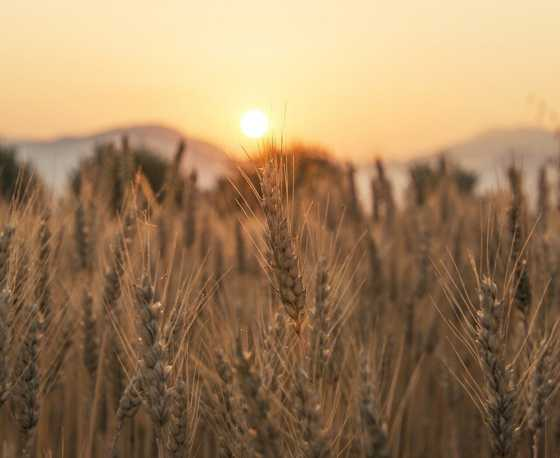
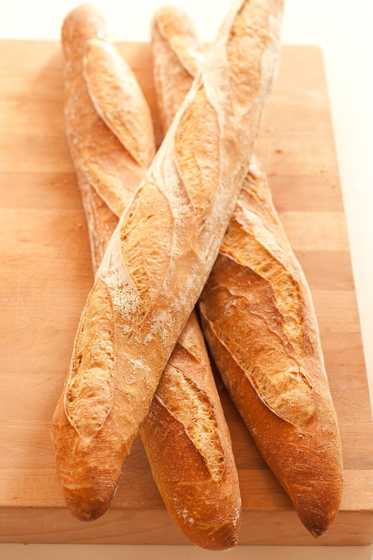
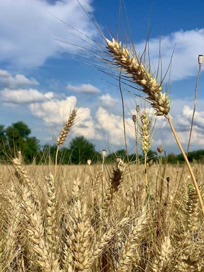
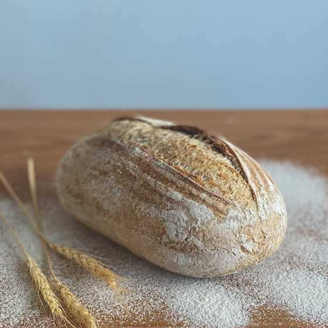
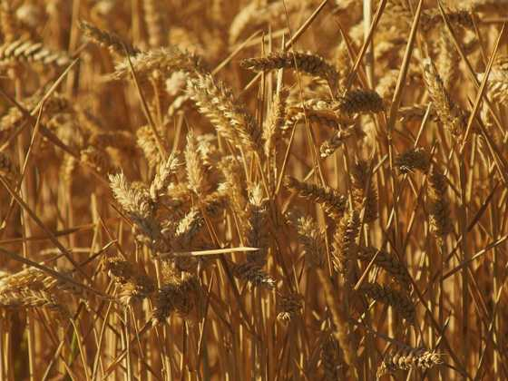
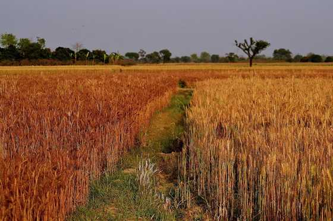
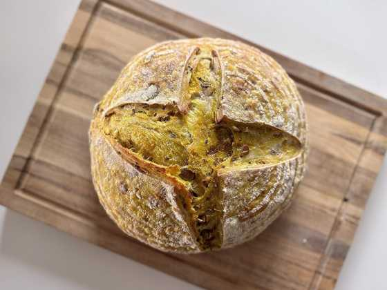
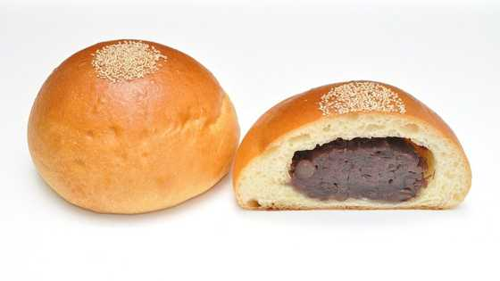
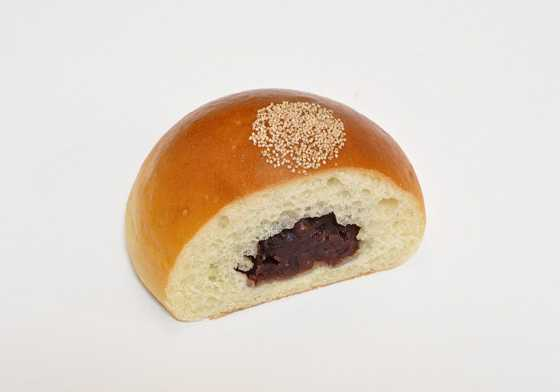

小麦の味を、まっすぐに。
国産小麦100%、無添加の生地で焼くパンを、枕崎の桜山本町で。
Instagramを見る口コミ
以下は制作側が作成した「イメージ例」で、実在のお客様の声ではありません。
イメージ例
小麦の風味がしっかり感じられる食パンでした。毎朝のトーストが楽しみになりそうです。
イメージ例
クロワッサンのサクサクした食感が好みでした。お土産にラスクも買いたくなります。
イメージ例
無添加と聞いて、家族にも安心して出せると思いました。また立ち寄りたいお店です。
お店のこと
2025年9月3日(水)、枕崎市桜山本町にオープンしたパン屋です。国産小麦を100%使い、無添加の生地で作るパンを販売していると紹介されています。
オープン初日は多くのお客様が訪れ、予定より早く閉店する日もあったと報じられました。
- 屋号:カルディアベーカリー(KarDia BAKERY)
- 所在地:〒898-0064 鹿児島県枕崎市桜山本町579
- 電話:準備中
- 営業時間:準備中(開店は9時30分からと紹介)
- 定休日:準備中
店名の由来や店主の想いは確認できていないため、掲載していません。

写真(イメージ)










アクセス
〒898-0064 鹿児島県枕崎市桜山本町579
最新の営業状況はInstagramをご確認ください:@bakerykardia